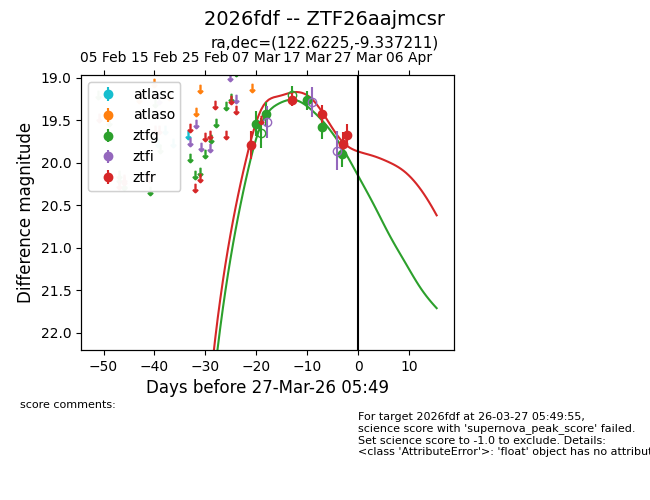
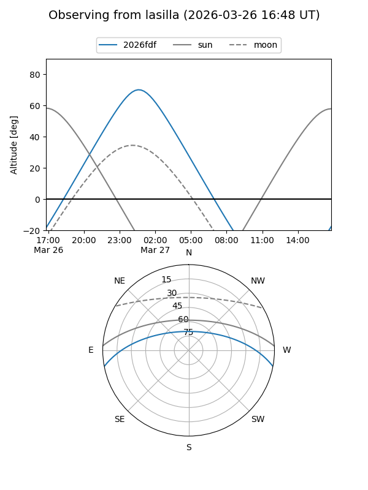
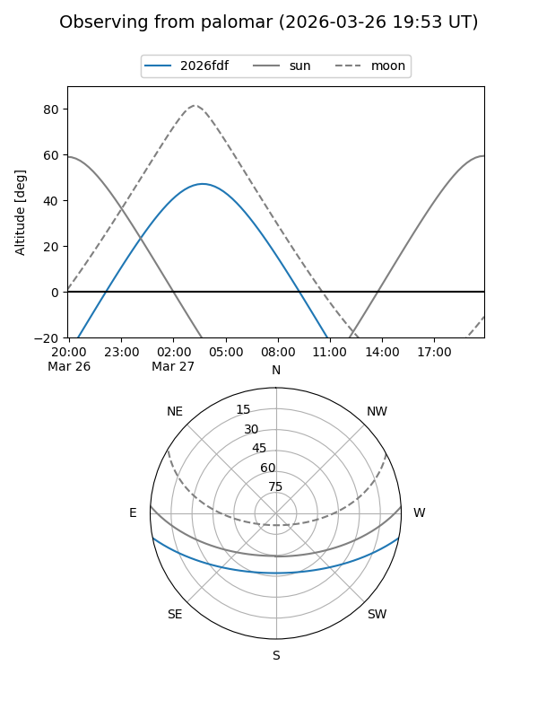
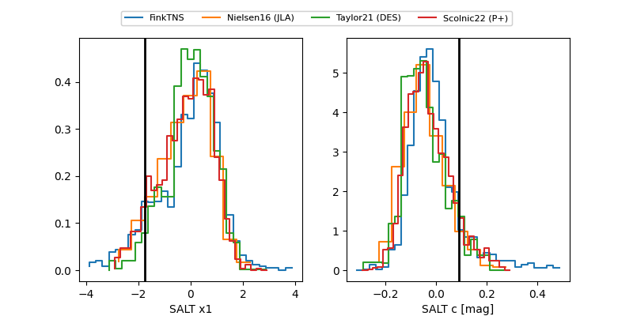

2026fdf
Target 2026fdf at 2026-03-27 05:52
Aliases and brokers:
FINK: link
Lasair: link
ALeRCE: link
TNS: link
YSE: link
alt names
ZTF26aajmcsr (ztf,fink_ztf)
2026fdf (tns,yse)
Coordinates:
equatorial (ra, dec) = 122.6225,-9.33721
equatorial (HMS+DMS) = 08:10:29.41,-09:20:13.96
galactic (l, b) = (230.6415,+12.88322)
Flags:
Photometry:
last ztfg=19.89, ztfr=19.68
5 ztfg, 5 ztfr detections
Lightcurve

Visibility


Additional plots
